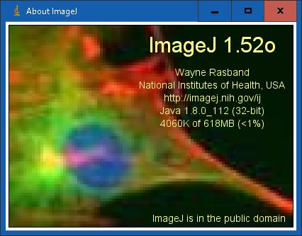

ImageJをソースからビルドしてみます。ソースを改変して自分専用のImageJを作ったり、今は無き32ビット版ImageJを作成することができます。
ちなみに、ImageJのダウンロードから「Version 1.52a」以降、Windows用の32ビット版が無くなってしまいました。現状、こちらでダウンロードすることができる「Version 1.49v」が32ビット版の最新になっています。
本記事では、32ビット版ImageJをソースから作成してみます。NetBeansなどを使わない非常に簡易な方法で行います。
GitHubのImageJのソースなら、どんなバージョンのImageJのソースも取得することが可能です。
必要なファイルの準備
(1) 2019年5月において、ImageJの64ビット版はJava SE Development Kit（JDK） 8u112を使っています。今回は同じバージョンの32bit版のJDKをダウンロードし利用します。
- NetBeansのインストールについての「JDKのインストール」を参考にしてください。
- 「jdk 8u112」でGoogle検索してください。
- 「jdk-8u112-windows-i586.exe」をダウンロードしてください。
(2) ImageJのダウンロードの「Source Code」の「zip archives」から「ij152o-src.zip」をダウンロードしてください。
(3) こちらから「ant.zip」をダウンロード します。
JDKのインストールとファイルの配置
(1) 「jdk-8u112-windows-i586.exe」を実行します。JREはインストールしなくも良いです。
(2) 「c:\tmp\ImageJ」フォルダを作成します。（今回の例ではこのフォルダでビルドを行います）
(3) 「ij152o-src.zip」を展開し、「c:\tmp\ImageJ\source」フォルダにコピーします。
(4) 「ant.zip」を展開し、「c:\tmp\ImageJ\ant」フォルダにコピーします。
フォルダ構造

ファイルの編集とビルド
(1) 「c:\tmp\ImageJ\source」フォルダの「build.xml」の9行目を以下のように編集します。「fork="yes"」にしないと、環境変数「JAVA_HOME」が有効にならないようです。
<javac srcdir="./ij" destdir="build" optimize="on" source="1.6" target="1.6" debug="on" includeantruntime="false" encoding="utf-8">最近のソース（例えば、ij153t-src.zip）ではbuild2.xmlと表示されたファイルが、本説明のXMLになります。build.xmlに変名して使いましょう。
<javac srcdir="./ij" destdir="build" optimize="on" source="1.8" target="1.8" debug="on" includeantruntime="false" fork="yes" encoding="utf-8">- 「c:\tmp\ImageJ\ant\bin」フォルダの「ant.bat」の3～4行目を編集します。「PROGRA~2」は「Program Files (x86)」の短い名前です。私の環境では「PROGRA~2」でしたが、PC環境によって異なるので
cd C:\PROGRA~2\などを実行して確認すると良いと思います。
set ANT_HOME=C:\ImageJ\ant
set JAVA_HOME=C:\ImageJ\jreset ANT_HOME=C:\tmp\ImageJ\ant
set JAVA_HOME=C:\PROGRA~2\Java\jdk1.8.0_112(2) コマンド プロンプトを起動、以下のようにコマンドを実行します。注意が表示されますが、ビルドは成功します。
> cd C:\tmp\ImageJ\source
> C:\tmp\ImageJ\ant\bin\ant.bat
Buildfile: build.xml
compile:
[javac] Compiling 346 source files to C:\tmp\ImageJ\source\build
[javac] 注意:一部の入力ファイルは非推奨のAPIを使用またはオーバーライドしています。
[javac] 注意:詳細は、-Xlint:deprecationオプションを指定して再コンパイルしてください。
[javac] 注意:入力ファイルの操作のうち、未チェックまたは安全ではないものがあります。
[javac] 注意:詳細は、-Xlint:uncheckedオプションを指定して再コンパイルしてください。
build:
[jar] Building jar: C:\tmp\ImageJ\source\ij.jar
run:
[copy] Copying 1 file to C:\tmp\ImageJ
BUILD SUCCESSFUL
Total time: 12 seconds
ビルドは一応成功しましたが、全ての機能が問題なく機能するかは試してはいませんので注意してください。